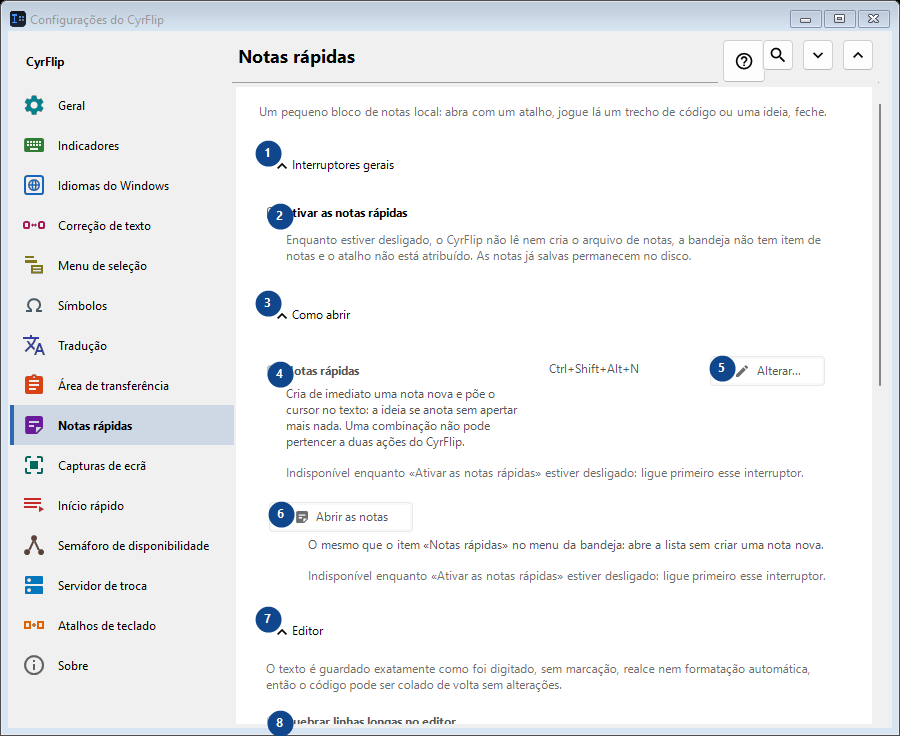
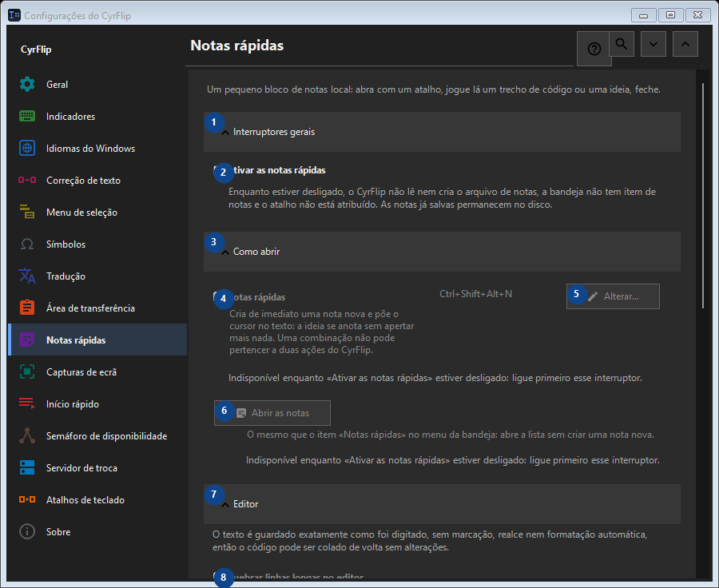

Notas rápidas
Para que serve
Um pequeno bloco de notas local: abra com um atalho, jogue lá um trecho de código ou uma ideia, feche.


Ordem de utilização
As definições são aplicadas de imediato. Não existe uma ordem obrigatória; use os grupos abaixo.
Elementos
1. Interruptores gerais
Use este comando para a ação indicada. Leia qualquer confirmação antes de aceitar.
Os seus atalhos2. Ativar as notas rápidas
Enquanto estiver desligado, o CyrFlip não lê nem cria o arquivo de notas, a bandeja não tem item de notas e o atalho não está atribuído. As notas já salvas permanecem no disco.
Os seus atalhos3. Como abrir
Use este comando para a ação indicada. Leia qualquer confirmação antes de aceitar.
Os seus atalhos4. Notas rápidas
Indisponível enquanto «Ativar as notas rápidas» estiver desligado: ligue primeiro esse interruptor. Este elemento não está disponível. Ative primeiro a função ou selecione uma entrada.
Os seus atalhos5. Alterar - Notas rápidas
Indisponível enquanto «Ativar as notas rápidas» estiver desligado: ligue primeiro esse interruptor. Este elemento não está disponível. Ative primeiro a função ou selecione uma entrada.
Os seus atalhos6. Abrir as notas
Indisponível enquanto «Ativar as notas rápidas» estiver desligado: ligue primeiro esse interruptor. Este elemento não está disponível. Ative primeiro a função ou selecione uma entrada.
Os seus atalhos7. Editor
Use este comando para a ação indicada. Leia qualquer confirmação antes de aceitar.
Os seus atalhos8. Quebrar linhas longas no editor
Indisponível enquanto «Ativar as notas rápidas» estiver desligado: ligue primeiro esse interruptor. Este elemento não está disponível. Ative primeiro a função ou selecione uma entrada.
Os seus atalhos9. Exportação e armazenamento
Use este comando para a ação indicada. Leia qualquer confirmação antes de aceitar.
Os seus atalhos10. Adicionar as datas ao exportar
Indisponível enquanto «Ativar as notas rápidas» estiver desligado: ligue primeiro esse interruptor. Este elemento não está disponível. Ative primeiro a função ou selecione uma entrada.
Os seus atalhos11. Exportar todas as notas para Markdown...
Indisponível enquanto «Ativar as notas rápidas» estiver desligado: ligue primeiro esse interruptor. Este elemento não está disponível. Ative primeiro a função ou selecione uma entrada.
Os seus atalhos12. Excluir todas as notas rápidas
Indisponível enquanto «Ativar as notas rápidas» estiver desligado: ligue primeiro esse interruptor. Este elemento não está disponível. Ative primeiro a função ou selecione uma entrada.
Os seus atalhos13. Transferência para outro computador
Use este comando para a ação indicada. Leia qualquer confirmação antes de aceitar.
Os seus atalhos14. Exportar...
Um único arquivo de texto aberto com as notas e o histórico da área de transferência escolhido: pode ser lido em qualquer editor ou no celular e importado no CyrFlip em outro computador. O arquivo não é criptografado. A importação mostra o que será adicionado e não exclui nada.
Os seus atalhos15. Importar...
Use este comando para a ação indicada. Leia qualquer confirmação antes de aceitar.
Os seus atalhos